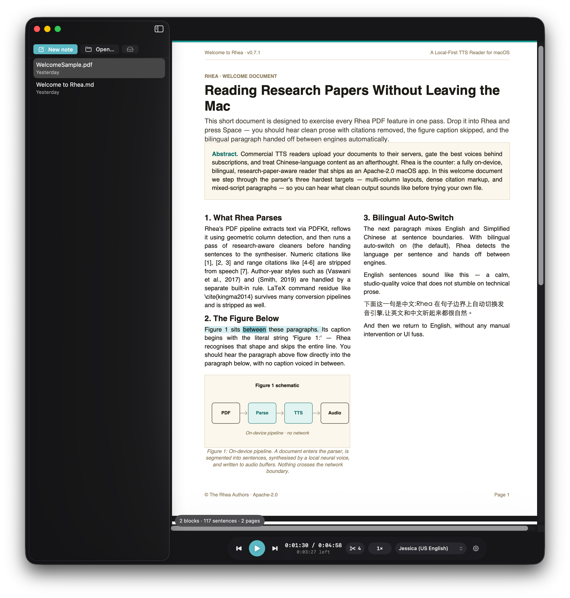
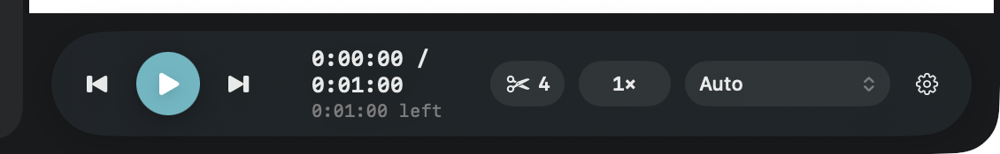
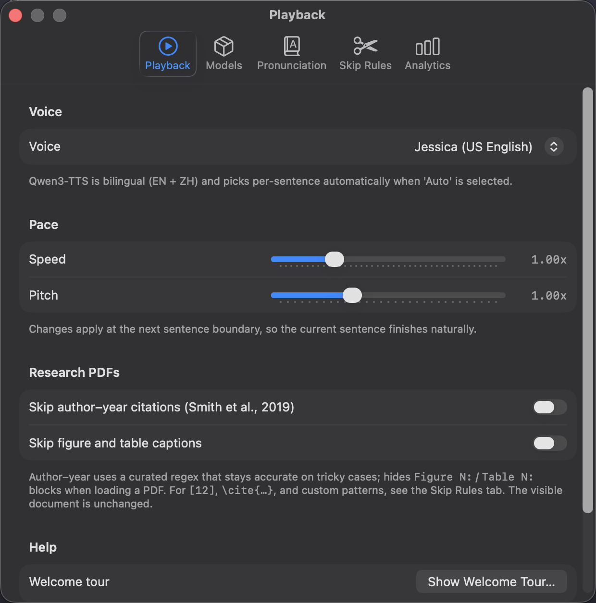
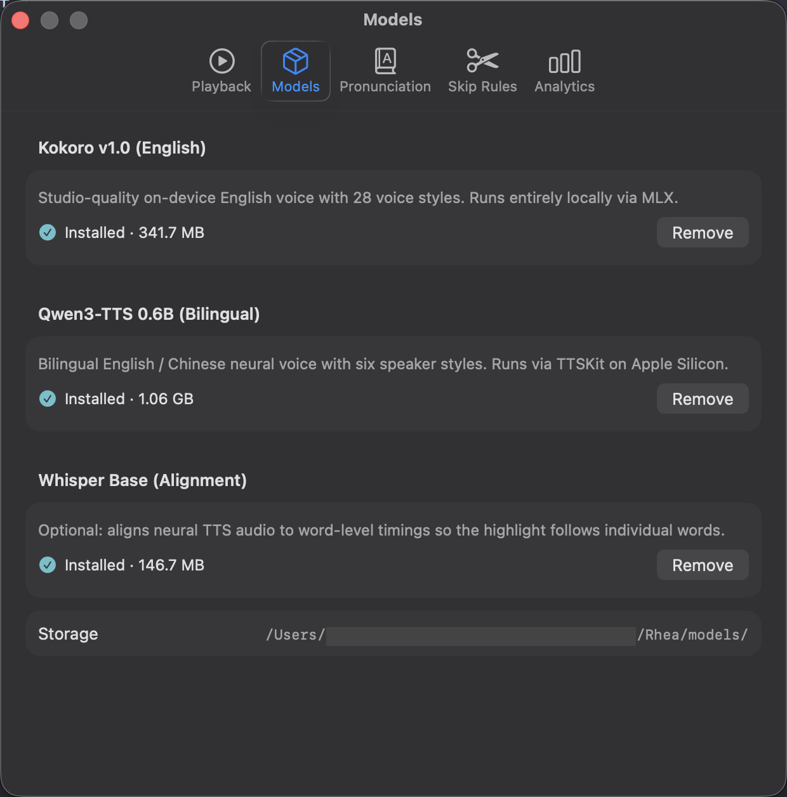
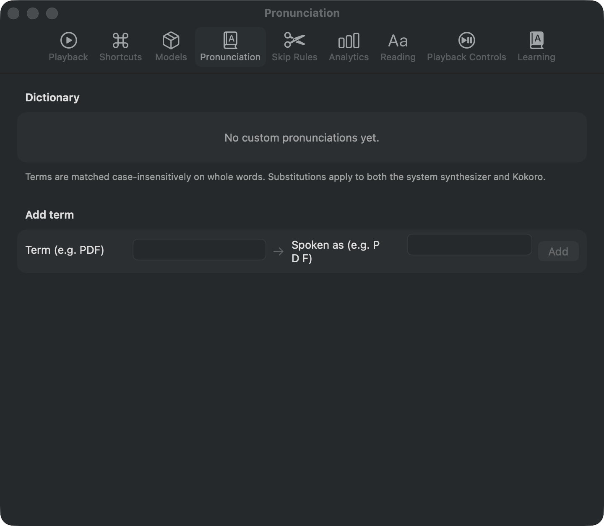
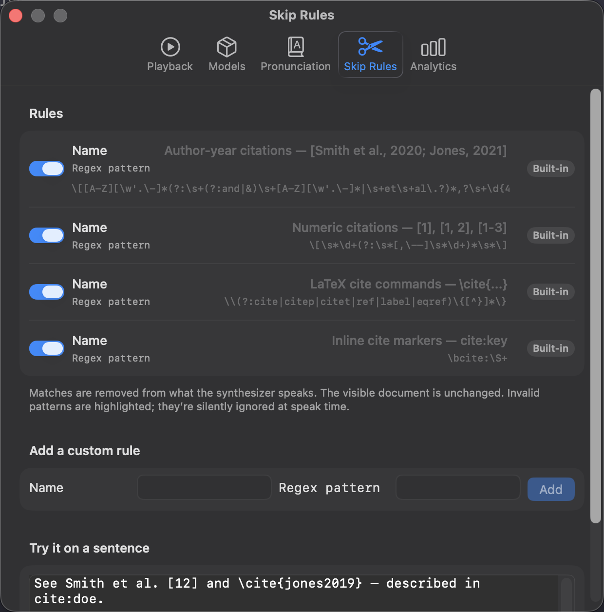
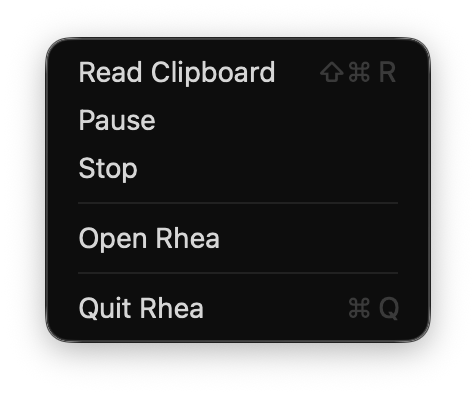
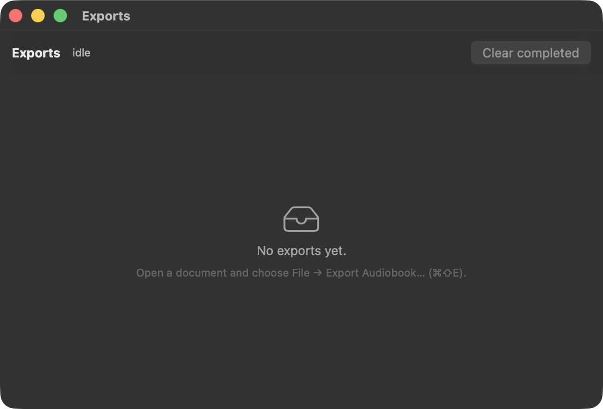

ReadAloudTTS · User Manual
Welcome to ReadAloudTTS.
A step-by-step guide to reading papers, notes, and books with ReadAloudTTS — macOS 15 and up, Apple Silicon, no account, no subscription, your documents never leave your Mac.
Contents
Quick Start
If you want to hear your first paper in three minutes, follow these four steps. The rest of the manual explains each piece in detail.
Download the latest .dmg from Releases, mount it, drag ReadAloudTTS into /Applications.
Launch ReadAloudTTS and drop any PDF, Markdown, or EPUB onto the window — or press ⌘O. ReadAloudTTS ships with a short sample document; the welcome tour offers to open it for you.

The capsule at the bottom of the window is the transport HUD. Space starts reading; the active sentence is washed in amber and the current word pulses brighter.
Pick Read from here to jump playback. Close the window mid-read — ReadAloudTTS restores the exact sentence on next launch.
The first-run welcome tour offers a sample WelcomeSample.pdf that exercises every PDF feature — multi-column layout, numeric and author-year citations, a figure caption, and a bilingual EN+中文 paragraph. It's the fastest way to hear clean output on all the tricky cases.
1. Install
Using the DMG
Grab the latest .dmg from the Releases page, mount it, and drag ReadAloudTTS into /Applications.
ReadAloudTTS is unsigned until v0.8.x ships notarised builds. First launch: right-click the app → Open. macOS asks once; afterwards plain double-click works. Alternatively drop the quarantine flag from Terminal:xattr -dr com.apple.quarantine /Applications/ReadAloudTTS.app
Homebrew
A Homebrew Cask (brew install --cask readaloudtts) lands in v0.8.x once the release cadence stabilises.
Build from source
If you have Xcode 16 and the macOS 15 SDK:
git clone https://github.com/HarveyLijh/ReadAloudTTS.git && cd ReadAloudTTS && open ReadAloudTTS.xcodeproj
No Tuist, no XcodeGen, no code-generation step — the .xcodeproj is hand-maintained. Scripts/build.sh also runs without Xcode if all you have is the Command Line Tools.
2. First Launch
The first time you open ReadAloudTTS, a brief welcome tour highlights the library sidebar, the transport HUD, and the drop target, and offers to load the bundled sample PDF. You can reopen the tour any time from Settings → Playback → Show Welcome Tour….
Neural voices — Kokoro for English and Qwen3-TTS for bilingual EN+ZH — are downloaded on demand from Settings → Models. The download happens once, directly from mirrors, and the files live in your sandboxed Application Support directory.
After models are downloaded, ReadAloudTTS never talks to the network again during normal use. You can verify with Little Snitch or the macOS Firewall.
3. Opening Documents
ReadAloudTTS reads three document families natively, with no preconfiguration:
| Format | How it's parsed |
|---|---|
PDF .pdf | PDFKit with a research-aware post-processor: multi-column layouts, numeric and author-year citations, figure and table captions are stripped from speech (but stay visible in the viewer). |
Markdown .md | Foundation's attributed-string parser with a segmented Raw / Preview toggle. Clicking a word in Preview starts playback at that word. |
EPUB .epub | ZIPFoundation unzips the container; XHTML chapters are concatenated in spine order and segmented by NLTokenizer. |
There are four ways to open a document:
- Drag into the ReadAloudTTS window or the ReadAloudTTS icon in the Dock.
- ⌘O → browse.
- Finder → right-click → Open With → ReadAloudTTS (or double-click if ReadAloudTTS is the default handler for that type).
- Command line:
open -a ReadAloudTTS paper.pdf
Opening a new document while one is already loaded re-uses the existing window. ReadAloudTTS never spawns duplicate reader windows.
4. The Transport HUD
The capsule at the bottom of the window carries every playback control at arm's length. It collapses progressively on narrow windows — time drops first, then the voice label, then the speed chip — but the transport and scrubber are always visible.

Skip-rules counter
The small scissors pill shows the number of currently active regex skip rules (see §11). Tap it to open Settings → Skip Rules; toggles take effect at the next sentence boundary, so you don't lose your place.
Speed chip
Press ⌘] to speed up by 0.1× and ⌘[ to slow down. Range: 0.5× to 4.0×. Neural voices (Kokoro, Qwen3) apply rate via time-stretching so pitch stays natural.
Voice chip
Click the voice label to swap voice or engine. ReadAloudTTS restarts the current sentence on the new voice and flashes an undo toast with a 4-second timer.
If a neural engine fails mid-read (model missing, out of memory), the chip flips to a system-voice icon and a banner appears for 2 seconds. The chip heals automatically when the next synthesis succeeds — no manual recovery needed.
5. Highlighting & Click-to-Read
Two layers of highlight move in sync with audio:
- Active sentence — soft amber wash that auto-scrolls to stay visible.
- Active word — brighter block driven by
AVSpeechSynthesizer.willSpeakRangefor system voices, or by Whisper forced alignment for neural voices.
Double-click any word in any viewer to jump playback there. Right-click opens a contextual menu with Read from here and Read from here to end. Manual scroll is respected — ReadAloudTTS only auto-scrolls on sentence changes, never on word ticks.
6. Resume Position
Closing ReadAloudTTS mid-read is safe. The paused cursor is stored per document; on next launch, reopening that document restores the exact sentence you stopped on. Press Space to continue.
Per-document voice and speed memory lands in v0.8.x — a dense paper will open at 1.0× while a novel opens at 1.6× without re-setting.
7. Voice Engines
ReadAloudTTS ships three engines. All run locally on your Mac.
| Engine | Voices | Download | Best for |
|---|---|---|---|
| System | Any AVSpeechSynthesis voice on your Mac | None — uses built-in macOS voices | Fast preview, very long documents, battery runs |
| Kokoro | 28 English voices (US + UK, M + F) | ~340 MB, once | Studio-quality English reading |
| Qwen3-TTS | 6 bilingual EN+ZH speakers | ~1 GB, once | Chinese content, bilingual papers |

If you want a neural voice to read Chinese and an English voice to read English automatically, leave the voice picker on Auto and the bilingual auto-switch handles per-sentence handoff for you.
8. Downloading Models
Settings → Models lists the three optional model packages and their install state. Click Install to download; click Remove to reclaim the disk space if you're not using that engine.

Whisper Base is optional but recommended — without it, neural voices still speak fine, but word-level highlighting falls back to coarser sentence-level highlighting.
9. Bilingual Auto-Switch
Bilingual auto-switch is on by default. ReadAloudTTS runs NLLanguageRecognizer on every sentence and hands off between engines — an English paragraph followed by a Chinese one transitions seamlessly at the sentence boundary.
Toggle it in the Playback settings. When off, every sentence is read in the selected voice regardless of language; mispronunciations in the wrong language are common, so leave it on unless your document is monolingual and you want a specific engine.
10. Pronunciation Overrides
If a voice consistently mispronounces a technical term — an author's name, an acronym, a Chinese toponym — add it to Settings → Pronunciation. Overrides are phonetic substitutions applied before the text reaches the synthesizer, and they work across every engine.

Replace LaTeX → Lah-tek, Vaswani → Vuh-swah-nee, PDF → P D F (with spaces, to force letter-by-letter reading).
11. Skip Rules
Skip rules are regex patterns stripped from the text before the synthesizer speaks it. They are the single most powerful tool for making research papers listenable.
ReadAloudTTS ships with four enabled-by-default built-ins:
| Rule | Matches |
|---|---|
| Author-year citations | (Smith et al., 2020), (Jones, 2021) |
| Numeric citations | [1], [1, 2], [1–3] |
| LaTeX cite commands | \cite{…}, \citep{…}, \ref{…}, \label{…} |
| Inline cite markers | cite:key, \bcite\S+ |

Add your own with the Name / Regex pattern / Add row. Invalid regexes are silently ignored at speak time — they're flagged in the list but never crash playback. Toggling any rule mid-read takes effect at the next sentence boundary.
If a sentence disappears entirely, a skip rule probably matched the whole thing. Paste it into the Try it on a sentence box and disable rules one by one until it reappears.
12. Keyboard Shortcuts
| Shortcut | Action |
|---|---|
| Space | Play / Pause |
| ← / → | Previous / Next sentence |
| ⌘] / ⌘[ | Speed up / slow down (0.1 step) |
| ⌘O | Open File… |
| ⌘⇧E | Export Audiobook… |
| ⌘⇧J | Show Exports queue |
| ⌘⇧S | Read Clipboard (global, from any app) |
| ⌘⇧R | Read Clipboard (from the menubar item) |
| ⌘, | Open Settings |
| ⌘⇧F | Fit to window width (PDF) |
| ⌘+ / ⌘– | Zoom in / out (PDF) — also ⌘-scroll |
| Esc | Reset PDF zoom & pan |
13. Services & Menubar
ReadAloudTTS integrates with macOS without needing the main window open.

- Menubar item — always available while ReadAloudTTS is running. Read Clipboard reads whatever's currently on the clipboard; Pause and Stop act on the current reader.
- Global hotkey — ⌘⇧S reads your clipboard from anywhere. No focus on ReadAloudTTS required.
- Services menu — highlight text in any app, choose Services → Read with ReadAloudTTS.
- URL handlers —
open -a ReadAloudTTS paper.pdfand Finder double-click both route to the existing reader window.
If Read with ReadAloudTTS isn't in the Services menu after install, open System Settings → Keyboard → Keyboard Shortcuts → Services → Text and tick the checkbox next to it.
14. Audiobook Export
File → Export Audiobook… (⌘⇧E) renders the current document to an audio file. The save panel's format picker offers:
- M4A (AAC, 128 kbps) — universal, Apple Books–friendly, smallest files.
- WAV (uncompressed, 44.1 kHz) — for external MP3 conversion or DAW editing.
Exports run in a background queue. Open it any time with ⌘⇧J.

A 30-page paper takes roughly 30 seconds to export with Kokoro on an M2; a 400-page EPUB can take several minutes. The queue is resumable across app restarts.
15. FAQ
~/Library/Containers/app.readaloudtts.mac/Data/Library/Application Support/ReadAloudTTS. Model weights live under models/ in the same container. ReadAloudTTS never touches your source documents.~/Library/Containers/app.readaloudtts.mac. Next launch starts clean.16. Privacy
ReadAloudTTS is sandboxed and hardened. The entitlements file grants:
- User-selected files — read-only, only while you have the file open.
- Outgoing network — used once per model for the Kokoro, Qwen3-TTS, and Whisper downloads. Revoke in Little Snitch after first run if you like.
- Downloads folder (read-write) — for saving audiobook exports.
Reading stats are local-only and feed the transport's time estimates. Opt out in Settings → Analytics; ReadAloudTTS has no analytics endpoint to send them to even if you wanted.